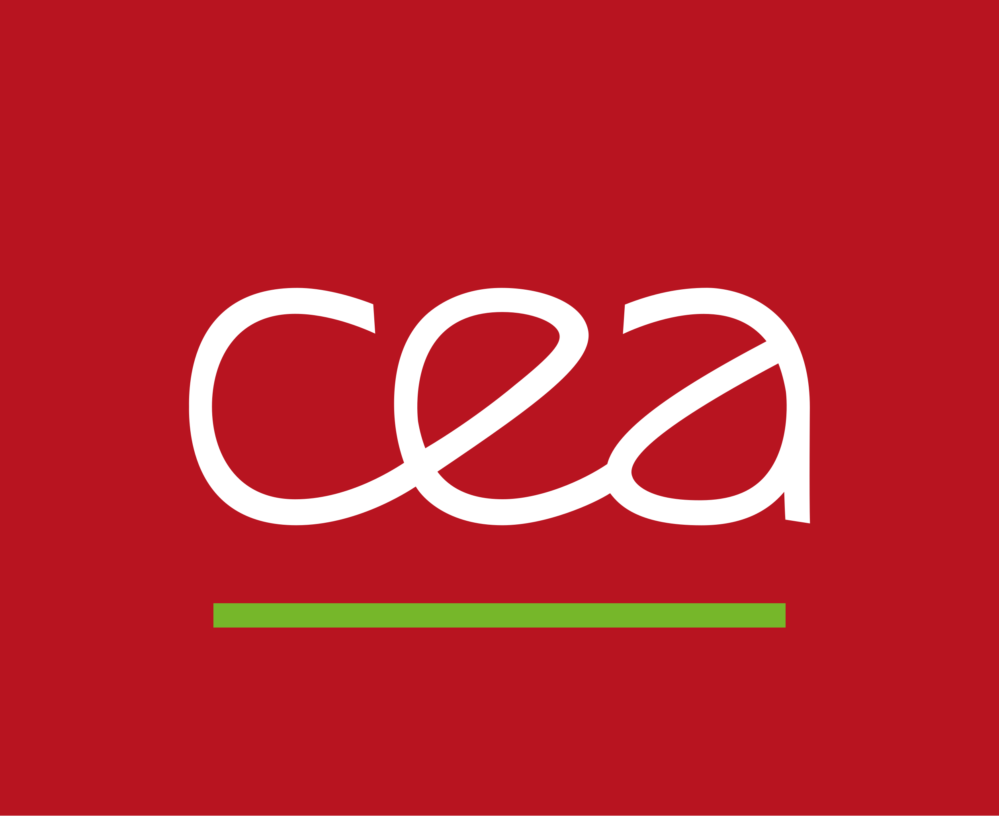

Licence Profesionnelle Métiers de l'informatique
Alternance CEA Valduc 
Présentation de la Licence Profesionnelle
La licence professionnelle "Métiers de l'Informatique : Applications Web", spécialité "Systèmes Intra/Internet pour l'Entreprise", offre une formation complète en développement web et systèmes informatiques. Elle couvre la programmation objet avec Java, le développement mobile Android avec Kotlin et Flutter, le développement web front-end et back-end en utilisant HTML5, CSS3, JavaScript, PHP, et SQL, ainsi que des notions avancées en architecture réseau et sécurité informatique. Destinée à préparer les étudiants aux rôles de développeurs web, administrateurs système, et concepteurs d'applications, cette licence intègre également des compétences en gestion de projets informatiques et en travail collaboratif.
Alternance au CEA Valduc - EPURE
Au cours de mon alternance, j'ai eu l'opportunité unique de travailler au sein d'EPURE au CEA Valduc, un centre d'excellence français dédié à la recherche et à l'innovation dans le domaine de la défense nucléaire.
EPURE est une installation qui permet la réalisation d'expériences hydrodynamiques avancées, simulant le comportement des matériaux sous haute pression.
J'ai rejoins un pôle de développement informatique au sein duquel j'ai pu mettre en pratique certaines de mes connaissances informatiques mais également enrichir énormément mes compétences en administration réseau.
Missions et Projets réalisés en alternance
Lors de mon alternance au CEA Valduc, ma mission principale a été de mettre en œuvre un réseau applicatif destiné à unifier l'environnement de travail des équipes de développement. Cette initiative avait pour but de faciliter la collaboration et d'optimiser les processus de développement au sein de l'organisation, en fournissant un cadre de travail cohérent et sécurisé.
Afin de mettre en oeuvre ce projet, j'ai eu à ma disposition des ressources matérielles et logicielles de pointe. La première étape de la construction d'un réseau applicatif a été l'installation et le paramétrage de switchs afin de pouvoir déployer le réseau sur l'ensemble de l'instalation.
J'ai ensuite, à l'aide de différentes machines virtuelles, mis en place des outils pour permettre d'avoir un environnement de travail cohérent et sécurisé. Nous avons choisis d'utiliser la solution Active Directory proposée par Windows Server, ainsi que d'autres outils comme M-Files et SQL Server.
J'ai également participé à la mise en place d'un serveur de gestion de version, Gitlab, pour permettre aux équipes de développement de travailler de manière collaborative et sécurisée.
En parallèle, j'ai également mis mes compétences en développement web à profit pour réaliser un site web interne destiné à présenter le réseau applicatif et les outils mis à disposition des équipes de développement. Cet interface web a été réalisé en utilisant les technologies HTML, CSS, et JavaScript, et sert de support pour le mode opératoire de l'utilisation des outils mis en place.
Compétences acquises
Ce projet réalisé lors de mon alternance a constitué une expérience formatrice exceptionnelle, me permettant de développer et d'affiner mes compétences dans beaucoup de domaines. La mise en oeuvre d'un réseau, en partant de zéro, m'aura permis de voir toutes les étapes menant à l'utilisation finale d'une telle structure.
Grâce à l'aide et la pédagogie de mes collaborateurs, j'ai pu rapidement apprendre et comprendre le fonctionnement des switchs et des serveurs, ainsi que les différents protocoles de communication utilisés. L'utilisation d'Active Directory et de tous les outils qui en découlent m'aura permis de mieux comprendre certains concept comme le DHCP, le DNS, et les stratégies de groupe, les GPO.
J'ai été également amené à travailler sur le développement de scripts PowerShell pour automatiser certaines tâches d'administration réseau.
En résumé, cette expérience m'aura permis d'élargir mes compétences en informatique en m'orientant vers l'administration et la gestion de réseau informatique de manière très concrète et professionnelle.
Parcours de formation Développeur Web
chez OpenClassRooms
Mes Expériences Profesionnelles


Mes hobbies
Autres informations


- Permis A & B

- Anglais Niveau Intermédiaire

- Connaissances Hardware